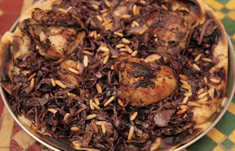

msakhan
Musakhan is a Palestinian Arab cuisine dish, composed of roasted chicken baked with onions, sumac, allspice, saffron, and fried pine nuts served over taboon bread. It is also known as muhammar. It is often considered the national dish of Palestine
